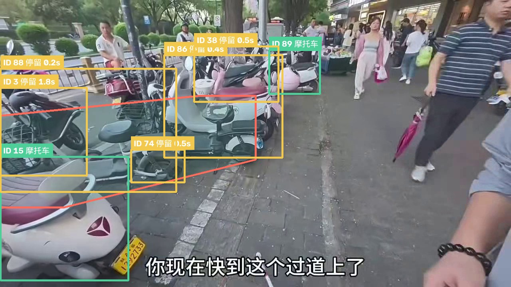
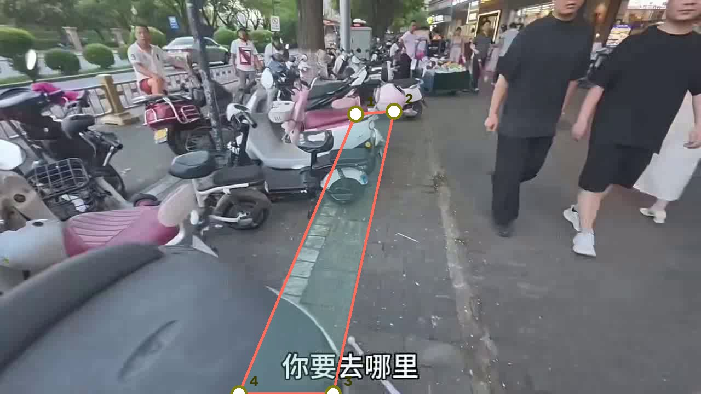
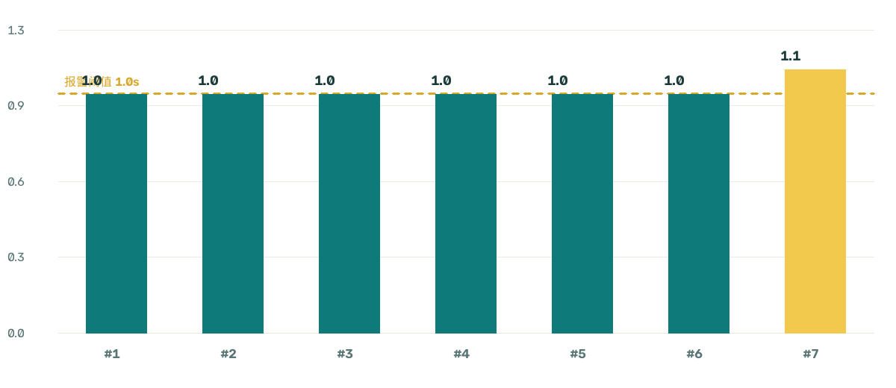

实时监控
检测画面 · 区域内目标 · 实时统计
实时画面
100%

Frame 45 ｜ 区域内 5 ｜ 报警 3 ｜ 阈值 1.0s
⚠ 盲道占用报警
普通车辆
区域内停留中
超时占用报警
滚轮缩放 · 拖拽平移 · 双击复位
区域标定
在画面上拖动 4 个角点，框出盲道区域，保存后立即生效
标定画面
拖动角点自由变形 · 滚轮缩放 · 拖拽平移

提示：四个角点分别落在盲道两端的左右边缘，覆盖整条盲道即可。保存后检测立刻按新区域判定。
报警记录
每一次占用报警的证据截图与详情
报警记录
| # | 时间 | 目标 | 停留 | 类型 | 车辆信息 |
|---|---|---|---|---|---|
| 1 | 15:01:12 | #11 | 1.0s | 摩托车 | 白色/银灰色 摩托车 |
| 2 | 15:01:13 | #3 | 1.0s | 摩托车 | 银灰色 摩托车 |
| 3 | 15:01:14 | #15 | 1.1s | 摩托车 | 白色 摩托车 |
数据报告
本次检测的统计汇总与证据导出
已处理帧数
141
共 141 帧
占用报警
3
已触发报警
最长停留
1.1 s
阈值 1.0s
占用占比
6.4%
报警次数 / 处理帧数
各次报警的停留时长
